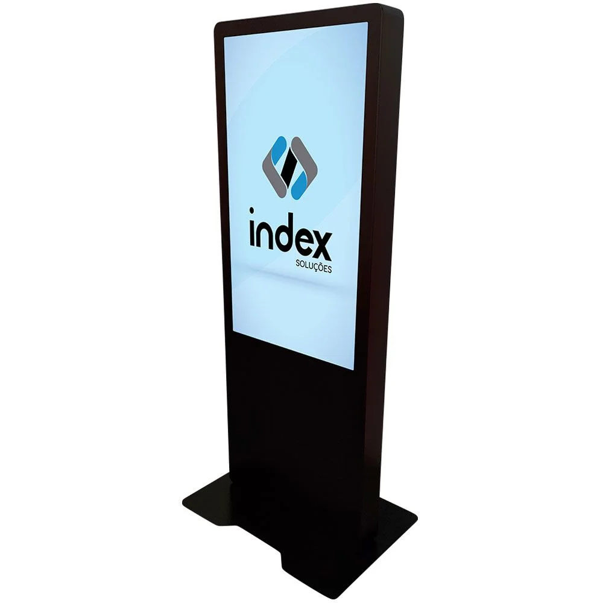
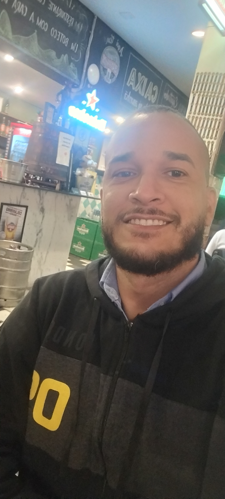

<ion-header [translucent]="true">
  <ion-toolbar>
    <ion-title>
      Projeto 1 - Mobile
    </ion-title>
  </ion-toolbar>
</ion-header>

<ion-content [fullscreen]="true">
  <ion-header collapse="condense">
    <ion-toolbar>
      <ion-title size="large">Tab 3</ion-title>
    </ion-toolbar>
  </ion-header>

 <!-- <app-explore-container name="Tab 3 page"></app-explore-container> -->
 <ion-card>
  <ion-card-content>
    
    <ion-label style="display:inline-block;text-align:justify;">
      Este aplicativo foi desenvolvido como parte da avaliação para a disciplina de Desenvolvimento Móvel
    </ion-label>
  </ion-card-content>
</ion-card>
<ion-card>
  <ion-card-content>
 <ion-list>
  <ion-item>
    <ion-avatar slot="start"></ion-avatar>
<ion-label> João Fernando Correia da Silva - 01344679 </ion-label>
  </ion-item>
 </ion-list>
  </ion-card-content>
</ion-card>
</ion-content>
